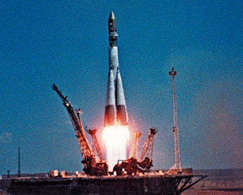

Человек и Космос Человечество вступило в космический век. В наше время всякому образованному человеку необходимо знать, что такое космос, и иметь представление о происходящих в космосе процессах. В современном понимание термин «космос» имеет несколько значений: всё, что находится за пределами Земли и её атмосферы; область пространства, доступная исследованиям с борта космических аппаратов.  Самыми первые существа, побывавшие в космосе и выжившие, стали знаменитые собаки Белка и Стрелка. В начале 60-х не было в мире более популярных собак, чем эти советские дворняги. Ещё бы! Им впервые удалось в настоящем космическом корабле больше суток летать вокруг планеты и вернуться домой живыми и невредимыми! После удачного полёта в космос животных, стала открытой дорога человеку к звёздам. Через 8 месяцев на таком же космическом корабле, на котором летали Белка и Стрелка, в космос отправился человек. Впервые в мире космический корабль с человеком на борту ворвался в просторы Вселенной. И первым человеком, которому суждено было совершить этот прорыв в космос, был гражданин СССР - Ю.А.Гагарин. 12 апреля 1961 года, в истории планеты произошло величайшее событие, сравнимое разве что с изобретением колеса или алфавита. Тысячелетняя мечта всех народов - преодолеть силу тяготения своей родной планеты - стала явью. 108 минут, один виток вокруг нашей планеты, предстояло сделать Юрию Алексеевичу Гагарину, который стартовал в корабле «Восток» с космодрома Байконор в Казахстане. Уже после полета это краткое космическое путешествие человека было названо «прыжком в неизвестность» Гагарин выдержал испытание. Единственное, от чего он не мог удержаться, это от поистине «космического» восторга при виде Земли из космоса, когда, словами Пушкина, «одна заря сменить другую спешит, дав ночи полчаса». Восторг не покидал 27-летнего летчика и еще несколько десятков минут после приземления. После Гагарина люди летали в космос уже с запасом спокойствия и уверенности. «Он всем нам проложил дорогу в космос», - сказал о первом космонавте Земли человек, первым ступивший на поверхность Луны, Нейл Армстронг. После удачного «покорения» космоса люди и космонавты стали более уверенны. 16 июня 1963 года совершён первый в мире полёт в космос женщины-космонавта Валентины Владимировны Терешковой. "Эй! Небо, сними шляпу", - произнесла Валентина Терешкова, перед тем как стать легендой. Эти слова стали частью истории, как и знаменитое гагаринское "Поехали!". Первый шаг на пути освоения открытого космического пространства был сделан 18 марта 1965 года, когда лётчик – космонавт Алексей Архипович Леонов первым из землян вышел за пределы космического корабля. Американский астронавт Нил Армстронг сделал первый шаг по поверхности естественного спутника Земли (21 июля 1969 года). Светлана Евгеньевна Савицкая - вторая женщина-космонавт в мире и первая в мире женщина-космонавт, вышедшая в открытый космос. Сегодня в космическом пространстве побывало множество человек.
Исследования и эксперименты в космосе. Так или иначе, жизнь на нашей планете обязана своим возникновением сочетанию космических и планетарных условий, а теперь она в результате долгой эволюции и в лице своего представителя, человека, сама выходит непосредственно во Вселенную. Такова, видимо, закономерность развития жизни, относящаяся уже не к прошлому, а к будущему. Космос, планета и снова космос - вот вселенский цикл жизни, демонстрируемый ныне человечеством. Рожденная на Земле жизнь, выходя за пределы планеты, тем самым обнаруживает свою космическую устремленность. Таково «эволюционное» значение переживаемого нами космического века. Земные микроорганизмы можно встретить на высоте до 100 километров. Этот рубеж обозначает предел естественной экспансии земной жизни в сторону космического пространства. Однако человек с помощью ракетно-космической техники, то есть «искусственно», не только сам выходит в космос, но и берет с собой животных и растения. Вначале (и это совершается уже теперь) исследуется воздействие условий космического полета на представителей земной жизни, а в перспективе предстоит освоение нового жизненного пространства, его обживание. Цели биологических опытов в космосе многоплановы, они служат решению таких практических задач космонавтики, как определение степени опасности орбитального полета для живого существа (включая, разумеется, и самого человека), определение и создание возможности включать растения в систему жизнеобеспечения, использовать их в космических рейсах в качестве поглотителей углекислого газа, поставщиков кислорода и продуктов питания. Биологические эксперименты в космосе - дело тонкое и весьма специфическое. Начнем с того, что часто такие опыты проводятся без непосредственного участия исследователей, на автоматических спутниках. Для этого применяется сложное и в то же время максимально легкое и компактное оборудование – таково непременное требование выведения на орбиту полезного груза. Для высших животных, например, создаются автоматические системы, поставляющие кислород для дыхания, пищу и питье, удаляющие отходы жизнедеятельности. Первым живым существом, покинувшим планету, была собака Лайка, запущенная в 1957 году на втором советском спутнике спустя месяц после запуска знаменитого первого Спутника. Собаки запускались и после, возвращаясь уже живыми и здоровыми. А в 1983 и 1985 годах в космос летали и тоже благополучно возвращались на Землю обезьяны. О том, как ученые распутывают этот клубок противоречий между задачами исследования и жесткой ограничительностью условий его проведения, как ставят интересные опыты, мы расскажем на примере экспериментов с плодовой мушкой - дрозофилой. ИРнтересно получить в невесомости несколько поколений дрозофил: получились бы самые настоящие «эфирные существа», если воспользоваться терминологией Циолковского, которые не только развиваются, но и рождаются в космосе. Да и не в терминологии тут дело, а в экспериментальном подтверждении одной из смелейших гипотез калужского ученого. Для экспериментов такого рода создан другой прибор. Представляет он собой пластмассовый куб с гранью длиной около 10 сантиметров, собранный из секций с питательной средой и дверками между ними. В Полете космонавты вынимают в нужное время этот куб из термостата и открывают насекомым, находящимся в первой секции, доступ во вторую. Мушки откладывают на новой «жилплощади» яички, давая жизнь следующему поколению. Из таких яичек выходят уже чисто космические личинки. Они, в свою очередь, превращаются в куколок, затем в мух, которые переводятся в следующий отсек прибора и там выводят очередное космическое потомство. Именно так и происходило в действительности. Живые существа, пусть пока только мухи-дрозофилы, способны жить и размножаться вне Земли. Этот важный и многообещающий вывод, сделанный на основе космического эксперимента, доказывает, что жизнь и космос друг другу не противопоказаны.
Перспективы освоения космического пространства. Вслед за нынешней информационной волной нас ожидает индустриальная волна освоения и использование космического пространства. Осмысление этого обстоятельства, как и многих других свойств феномена космонавтики, часто приводит к возрождению и переосмыслению некоторых старых и почти забытых догадок и гипотез. Согласно Тюнену хозяйственное освоение всякой территории идет от города-центра к периферии. Сначала проводится нечто вроде разведки, выявляются возможности и ресурсы территории, потом туда передвигается промышленность, а город остается управляющим и координирующим центром. Нечто похожее совершается и в космосе, а центром выступает вся планета Земля, которая надолго останется средоточием управления, научной мысли, передовой техники и технологии для обживания космической «периферии», сняв с себя излишнее бремя индустрии, превратившись в экологически комфортное жилище человека. Все это так. Но я забыла сказать еще об одной космической отрасли, о которой, откровенно говоря, хотелось бы не упоминать вообще - о военной промышленности, о милитаризации космического пространства. В 30-е годы жители нескольких городов США однажды в панике бросились из своих домов в пригороды и сельскую местность, забив шоссейные и железные дороги. Они приняли всерьез радиопостановку режиссера Орсона Уэллеса по роману Герберта Уэллса «Война миров» - о нашествии на Землю спрутообразных марсиан. Теперь все знают, что на Марсе нет не только воинственных разумных существ, но, по-видимому, даже простейших бактерий. Угроза из космоса исходит от самих землян. В те же годы, на склоне жизни, писал свои небольшие философские эссе (сохранившиеся в рукописи) Циолковский, которого по праву можно назвать первым гуманистом космоса. По его глубокому убеждению успешное и плодотворное освоение Вселенной невозможно без солидарности и взаимопомощи людей - и выходящих в космос, и остающихся на Земле. Исследованный к настоящему времени космос оказался безжизненным. Но он уже открывает человеку множество своих богатств - энергетических, вещественных, пространственных. Он труден для освоения, но и многообещающ. Цивилизация второго типа, о которой мы упоминали, то есть вполне развитая космическая цивилизация, каковой призвано быть человечество XXI века, несовместима с его собственными внутренними антагонизмами. Разобщенных социальных сил не хватит для овладения силами Вселенной. Мы хотели бы верить, что раскрытие грандиозности задач и возможностей, открываемых перед человечеством космической наукой и техникой, космонавтикой, будет способствовать социальному единению жителей планеты Земля на принципах гуманизма, разума, справедливости, то есть тех качеств, которые единственно достойны Homo sapiens, превращающегося в Homo cosmicus. © Газаева Лейля Хамидовна "Человек и космос"